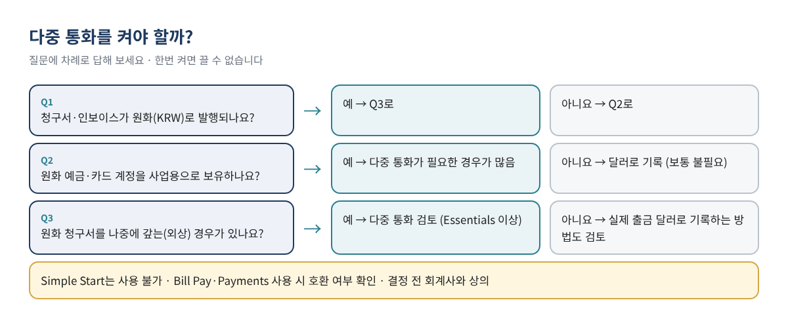
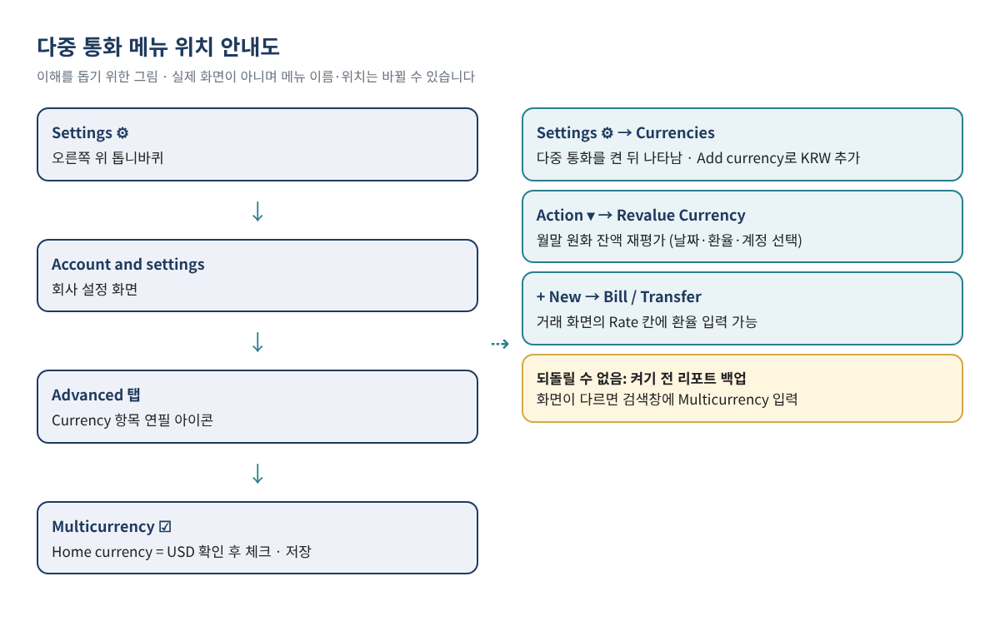
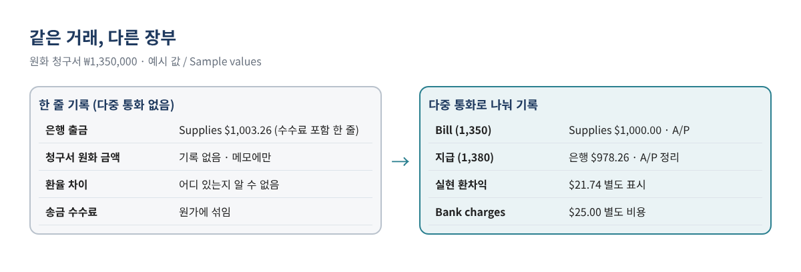
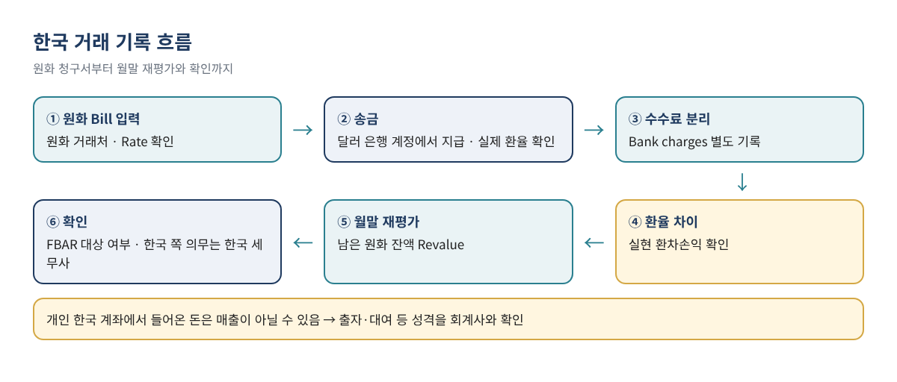

한국 거래처 대금, 달러 금액만 적고 있다면: QBO 다중 통화(Multicurrency) 설정과 환율 차이 기록법
한국 거래처에서 포장재나 식자재, 디자인 작업을 원화로 청구받고 미국 은행에서 송금하는 경우가 많습니다. 이때 은행 출금액만 보고 달러로 한 줄 기록해 두면, 청구서 금액(원화)과 장부 금액(달러)이 따로 놀게 됩니다. 청구서를 받은 날과 송금한 날의 환율이 다르면 그 차이가 어디로 갔는지 설명하기 어렵고, 송금 수수료가 상품 원가에 섞여 들어가기도 합니다.
이 글은 QuickBooks Online(QBO)의 다중 통화(Multicurrency) 기능을 켜야 하는지 판단하는 기준, 켜는 순서, 원화 거래처와 원화 청구서(Bill) 입력, 환율 차이(환차손익) 처리, 월말 재평가(Revalue)까지 단계별로 정리합니다. 시리즈 첫 글 QuickBooks Online 기초 가이드에서 짧게 다룬 내용을 자세히 풀어 쓴 글입니다.
이 글은 교육용 일반 정보이며 세무·법률·재무 자문이 아닙니다.
이런 분께 필요합니다 ☐ 한국 거래처에 원화로 대금을 보내는 사장님 ☐ 원화 청구서를 달러로 환산해 직접 입력해 온 분 ☐ 송금 수수료와 환율 차이를 어느 계정에 넣어야 할지 헷갈리는 분 ☐ 한국 개인 계좌에서 미국 사업체 계좌로 돈을 옮긴 기록이 매출로 잡혀 있는지 걱정되는 분
1. 먼저 판단: 다중 통화를 꼭 켜야 할까요?
다중 통화는 한번 켜면 끌 수 없습니다. Intuit 안내에 따르면 켠 뒤에는 기능을 끌 수 없고, 기준 통화(Home currency)도 바꿀 수 없습니다. 그래서 '편해 보여서' 켜기보다는 실제로 외화 금액을 장부에 남겨야 하는지부터 확인하는 것이 순서입니다.
| 상황 (예시) | 다중 통화 필요성 | 일반적인 기록 방식 |
|---|---|---|
| 한국 거래처가 달러 청구서를 보내고, 미국 계좌에서 달러로 송금 | 보통 필요하지 않음 | 달러 Bill 또는 Expense로 기록 |
| 한국 거래처가 원화 청구서를 보내고, 나중에 송금(외상) | 검토할 만함 | 원화 거래처 + 원화 Bill → 지급 시 환율 입력 |
| 원화 예금 계좌나 원화 카드 계정을 사업용으로 보유 | 필요한 경우가 많음 | 원화 은행 계정을 따로 만들어 기록 |
| 한국 고객에게 원화로 인보이스 발행 | 검토할 만함 | 원화 고객 + 원화 Invoice |
| 한 번뿐인 소액 송금, 청구서도 달러 | 보통 필요하지 않음 | 은행 출금액 그대로 기록, 수수료는 별도 |

요금제 확인 Intuit 미국 도움말 기준으로 다중 통화는 QBO Essentials, Plus, Advanced에서 쓸 수 있고 Simple Start에서는 쓸 수 없습니다. 같은 안내에 QuickBooks Bill Pay와 QuickBooks Payments는 다중 통화와 호환되지 않는다고 되어 있으니, 이 서비스를 쓰고 있다면 켜기 전에 최신 안내를 확인하세요. 또한 QuickBooks Commerce를 연결한 경우 다중 통화가 작동하지 않고, 다중 통화를 켜면 현금흐름 예측(cash flow planner) 기능이 비활성화된다고 안내되어 있습니다.
2. 다중 통화 켜는 순서
메뉴 이름과 위치는 자주 바뀝니다. 아래 2~5단계는 Intuit 미국 도움말에 안내된 흐름이며(1단계는 이 글의 권장 사항), 화면이 다르면 검색창에 "Multicurrency" 또는 "Currency"를 입력해 찾으세요.
- (권장 사항, Intuit 안내 단계 아님) 켜기 전에 백업용으로 Balance Sheet와 Profit and Loss 리포트를 PDF로 저장해 둡니다.
- Settings ⚙ → Account and settings → Advanced 탭으로 이동합니다.
- Currency 항목의 연필(편집) 아이콘을 누르고 Home currency가 United States Dollar인지 확인합니다. 기준 통화는 다중 통화를 켜기 전에만 바꿀 수 있습니다.
- Multicurrency 체크박스를 선택하고, 되돌릴 수 없다는 안내를 확인한 뒤 저장합니다.
- Settings ⚙ → Currencies(다중 통화를 켠 뒤에 나타남)에서 Add currency를 눌러 South Korean Won을 추가합니다.

3. 원화 거래처와 계정 만들기
다중 통화에서는 거래처·고객과 은행·카드 계정마다 통화를 하나씩 지정합니다. Intuit 안내에 따르면 거래가 한 번이라도 기록된 계정은 통화를 바꿀 수 없고, 거래처의 통화를 바꾸려면 기존 거래처를 비활성화하고 새 통화로 새 거래처를 만들어야 합니다. 매출(Income)과 비용(Expense) 계정은 항상 기준 통화(달러)로 집계됩니다.
| 항목 | 예시 값 / Sample values | 포인트 |
|---|---|---|
| 원화 거래처 | Seoul Pack Supply (KRW) – 가상 회사 | 이름 뒤에 통화를 붙이면 구분이 쉬움 |
| 같은 회사의 달러 거래처 | Seoul Pack Supply (USD) | 통화가 다르면 별도 거래처로 관리 |
| 원화 은행 계정 (보유 시) | KR Bank – KRW Operating | 실제 원화 계좌가 있을 때만 |
| 비용 계정 | Supplies, Bank charges | 달러로 집계됨 (원화 계정 불필요) |
거래처 목록을 엑셀로 한꺼번에 가져오는 방법은 고객·거래처·상품 목록 가져오기 글을 참고하세요. 다만 통화가 지정된 거래처는 가져오기 전에 통화 칸을 어떻게 다루는지 화면에서 먼저 확인하는 것이 안전합니다.
4. 원화 청구서 입력과 지급: 환율이 두 번 등장합니다
외상 거래에서는 환율이 두 번 쓰입니다. 청구서(Bill)를 입력하는 날의 환율로 달러 비용이 정해지고, 실제 송금하는 날의 환율로 은행에서 나간 달러가 정해집니다. 두 금액의 차이가 실현 환차손익입니다.
- + Create(또는 + New)에서 거래 종류로 Bill을 선택하고 원화 거래처를 고르고 청구서의 원화 금액을 입력합니다.
- 거래 화면의 Rate(환율) 칸을 확인합니다. Intuit 안내에 따르면 QBO가 제공하는 환율(IHS Markit) 또는 직접 정한 환율을 쓸 수 있고, 거래 화면에서 환율을 직접 입력할 수도 있습니다. 회사가 정한 기준을 일관되게 쓰는 편이 좋습니다.
- 송금 후 지급을 기록할 때는 달러 은행 계정을 선택하고, 은행 확인서에 나온 실제 적용 환율과 출금 달러 금액이 장부와 맞는지 확인합니다. 지급 화면 구성은 바뀔 수 있으니 최신 화면을 기준으로 하세요.
- 은행이 떼어 간 송금 수수료는 청구서 금액에 섞지 말고 Bank charges 같은 비용으로 따로 기록합니다.
- 지급 후 Bill이 Paid 상태인지, 은행 계정 잔액이 은행 명세서와 맞는지, 환율 차이가 Profit and Loss의 어느 줄에 표시되었는지 확인합니다.
계산 예시 (예시 값 / Sample values)
라스베이거스의 가상 한식당 Maru Kitchen이 Seoul Pack Supply에서 포장 용기를 ₩1,350,000에 외상으로 샀다고 가정합니다.
| 단계 | 원화 | 환율 (KRW/USD, 예시) | 달러 환산 |
|---|---|---|---|
| 청구서 입력일 | ₩1,350,000 | 1,350 | $1,000.00 |
| 송금일 | ₩1,350,000 | 1,380 | $978.26 |
| 차이 (실현 환차익) | – | – | $21.74 |
| 은행 송금 수수료 (별도 비용) | – | – | $25.00 |
송금액 $978.26과 수수료 $25.00을 합친 실제 은행 출금 총액은 $1,003.26입니다. 원화가 약해진 덕분에 같은 ₩1,350,000을 갚는 데 달러가 덜 들었으므로 $21.74는 환차익입니다. 반대로 송금일 환율이 1,320처럼 원화 강세였다면 달러가 더 들어 환차손이 생깁니다. 다중 통화를 켜지 않고 출금액 $978.26만 비용으로 넣으면 청구서 $1,000과의 차이가 장부에서 설명되지 않고, 수수료 $25까지 원가에 섞이면 원가가 실제와 다르게 보입니다.

5. 월말 재평가(Revalue): 아직 안 갚은 원화 잔액
월말에 원화 외상 잔액이나 원화 예금이 남아 있으면, 리포트의 달러 금액은 각 거래를 입력한 날의 환율 기준으로 남아 있습니다. Intuit 안내에 따르면 홈 통화 조정(Home currency adjustment)은 이 잔액을 새 환율로 다시 계산하는 기능이며, Essentials·Plus·Advanced에서 쓸 수 있습니다.
- Settings ⚙ → Currencies에서 South Korean Won 줄의 작은 화살표(Action)를 열고 Revalue Currency를 선택합니다.
- 날짜(보통 월말)와 환율(시장 환율 또는 직접 입력)을 정합니다.
- 재평가할 계정을 고르고 Revalue를 누릅니다.
- Intuit FAQ에 따르면 외상매출금·외상매입금(A/R, A/P)의 변동은 미실현 손익으로, 은행·카드 계정의 변동은 실현 손익으로 표시됩니다. 재평가로 생긴 분개는 번호와 메모만 수정할 수 있고, 날짜·금액·환율을 바꾸려면 삭제 후 다시 실행해야 합니다.
팁 장부를 마감(Close the books)한 기간은 재평가할 수 없습니다. 재평가는 리포트를 뽑기 직전에, 마감 전에 하는 순서가 자연스럽습니다. 재평가가 필요한지, 어떤 환율을 쓸지는 담당 회계사와 미리 정해 두세요.
6. 한국 계좌 ↔ 미국 계좌 이체와 세무 관련 확인 사항
사장님 개인 한국 계좌에서 미국 사업체 계좌로 돈을 보낸 경우, 은행 연결 화면에서 입금으로 잡혔다고 해서 바로 매출로 분류하지 말고 성격부터 확인하세요. 이런 돈은 일반적으로 출자(Owner's investment)나 사장님이 빌려준 돈(대여금) 등 성격에 따라 기록하며, 어느 쪽인지는 사실관계에 따라 달라지므로 회계사와 확인해야 합니다. 사장님 돈 처리 원칙은 사장님 돈 처리법 글에 정리해 두었습니다. 사업체가 원화 계좌를 갖고 있고 달러 계좌와 돈을 주고받는다면 + New → Transfer에서 보내는 계정과 받는 계정, 금액, 환율을 입력합니다.
| 확인 항목 | 내용 (공식 안내 기준) | 근거 |
|---|---|---|
| 세금 신고 통화 | 미국 세금 신고서 금액은 미국 달러로 표시해야 함 | IRS |
| IRS 공식 환율 | IRS는 공식 환율이 없으며, 일관되게 쓰는 공시 환율을 일반적으로 인정 | IRS |
| 적용 환율 원칙 | 일반적으로 받거나, 지급하거나, 발생한 시점의 환율(spot rate) | IRS |
| FBAR (FinCEN Form 114) | 미국인(U.S. person: 시민권자·거주자와 법인·파트너십·LLC·신탁·유산 등)이 금융 이익을 갖거나 서명 권한이 있는 해외 금융계좌의 합계가 연중 한 번이라도 $10,000를 넘은 경우 | IRS |
| FBAR 기한 | 다음 해 4월 15일, 별도 신청 없이 10월 15일까지 자동 연장. 세금 신고서와 별도로 BSA E-Filing으로 전자 제출 | IRS |
한국 쪽 의무도 확인하세요 한국 거주자이거나 한국 계좌·한국 송금이 얽혀 있다면 미국과 별개로 한국에서도 신고 의무가 생길 수 있습니다. 한국 쪽 기준과 금액은 이 글에서 다루지 않으며, 한국 세무사와 확인하시기 바랍니다.
비거주자가 미국 LLC를 운영하는 경우의 주의점은 한국 거주자의 미국 LLC 글을 참고하세요.

7. 자주 하는 실수
- 시험 삼아 켜기: 다중 통화는 끌 수 없습니다. 테스트가 필요하면 별도의 체험용 회사 파일에서 먼저 해 보세요.
- 같은 거래처에 두 통화 섞기: 원화 청구서와 달러 청구서를 한 거래처로 처리하려 하면 막힙니다. 통화별 거래처를 따로 만드세요.
- 수수료를 원가에 포함: 송금 수수료는 거래처에 갚은 돈이 아니므로 별도 비용으로 분리합니다.
- 개인 송금을 매출로 분류: 한국 개인 계좌에서 들어온 돈은 성격부터 확인합니다.
- 마감 후 재평가 시도: 마감한 기간은 재평가할 수 없습니다. 마감 순서는 잘못 입력한 거래 고치기 글의 마감 관련 부분도 함께 보세요.
8. 자주 묻는 질문 (FAQ)
Q. Simple Start 요금제인데 원화 청구서를 기록할 수 있나요?
Intuit 안내에 따르면 Simple Start에서는 다중 통화를 쓸 수 없습니다. 이 경우 일반적으로 실제 송금된 달러 금액으로 기록하고, 청구서 원화 금액은 메모나 첨부 파일로 남겨 두는 방식을 씁니다.
Q. 환율은 어디 것을 써야 하나요?
IRS는 공식 환율이 없다고 안내하며, 일관되게 사용하는 공시 환율을 일반적으로 인정합니다. QBO의 자동 환율, 은행 확인서의 실제 적용 환율 중 무엇을 쓸지 정해 두고 계속 같은 기준을 쓰는 것이 중요합니다.
Q. 이미 다중 통화를 켰는데 잘못 켠 것 같습니다. 되돌릴 수 있나요?
Intuit 안내상 다중 통화는 한번 켜면 끌 수 없고 기준 통화도 바꿀 수 없습니다. 현재 설정에서 거래처·계정 통화를 어떻게 정리할지 담당 회계사와 정하세요.
Q. 환차손익은 세금에 어떻게 반영되나요?
환차손익의 세무 처리는 거래 성격과 사업체 형태에 따라 다릅니다. 장부에서는 금액을 정확히 분리해 두고, 세무 처리는 CPA·EA 등 전문가와 확인하세요.
Q. 한국 계좌 잔액이 크지 않으면 FBAR와 상관없나요?
IRS 안내 기준은 해외 금융계좌 '합계'가 연중 한 번이라도 $10,000를 넘었는지입니다. 계좌가 여러 개라면 합계로 판단하므로, 본인 상황은 전문가와 확인하세요.
9. 셀프 체크리스트
- ☐ 원화 청구서·원화 계좌·원화 인보이스가 실제로 있는지 확인했다
- ☐ 요금제가 Essentials 이상인지, Bill Pay·Payments 사용 여부를 확인했다
- ☐ 켜기 전 Balance Sheet와 Profit and Loss를 저장했다
- ☐ 기준 통화가 USD인지 확인했다
- ☐ 통화별 거래처 이름에 (KRW)/(USD)를 붙였다
- ☐ 송금 수수료를 별도 비용으로 분리했다
- ☐ 월말에 원화 잔액 재평가 여부를 회계사와 정했다
- ☐ 해외 계좌 합계와 FBAR 대상 여부를 전문가와 확인했다
- ☐ 한국 쪽 신고 의무를 한국 세무사와 확인했다
10. 함께 읽으면 좋은 글
- QuickBooks Online 기초 가이드: 처음 시작할 때 꼭 알아야 할 10가지
- Bill과 지출 관리: 외상 매입, 일괄 지급, 거래처별 관리
- QBO 은행 연결 완전 정리: Match, Add, Rule
- 사장님 돈 처리법: Owner's draw, 개인 카드로 낸 사업 비용
- 인보이스부터 입금까지: 부분 결제·할인·환불·크레딧
- 한국 거주자의 미국 LLC
이 글은 교육 목적의 일반 정보이며 세무·법률·재무 자문이 아닙니다. 환율, 신고 기준과 기한은 바뀔 수 있으며, 본인 사업체에 적용되는 내용은 CPA, EA 또는 변호사 등 자격 있는 전문가와, 한국 쪽 의무는 한국 세무사와 확인하세요. QBO의 화면, 메뉴 이름, 요금제 구성은 자주 바뀌므로 최신 화면과 Intuit 및 IRS의 공식 안내를 확인하시기 바랍니다.
QuickBooks is a registered trademark of Intuit Inc.; not affiliated with or endorsed by Intuit.
출처
- Intuit QuickBooks Help: Set up and use Multicurrency in QuickBooks Online — 확인일 2026-11-23
- Intuit QuickBooks Help: Set up and use Multicurrency in QuickBooks Online (US article) — 확인일 2026-11-23
- Intuit QuickBooks Help: Enter and use own exchange rates in QuickBooks — 확인일 2026-11-23
- Intuit QuickBooks Help: Enter home currency adjustments for your foreign balances — 확인일 2026-11-23
- Intuit QuickBooks Help: Frequently asked questions about home currency adjustments — 확인일 2026-11-23
- IRS: Report of Foreign Bank and Financial Accounts (FBAR) — 확인일 2026-11-23
- IRS: Yearly average currency exchange rates — 확인일 2026-11-23
- IRS: Foreign currency and currency exchange rates — 확인일 2026-11-23